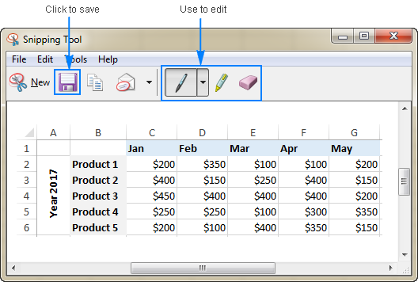

Planilha BKO de Macaco
Para começar a criar a planilha, abra o Microsoft Excel e crie uma nova planilha em branco. Você pode fazer isso selecionando "Novo" na tela inicial do Excel ou abrindo um novo arquivo do Excel diretamente.
Na primeira coluna, digite o nome de cada pessoa que você deseja contar as células hospedeiras.
Agora que você tem a planilha em branco aberto, você precisa começar a preencher as informações. Na primeira coluna da planilha, você precisa digitar o nome de cada pessoa que deseja contar as células ocupadas. Para fazer isso, clique na célula A1 e digite o nome da primeira pessoa (por exemplo, "João"). Em seguida, pressione "Enter" para ir para a próxima célula abaixo (A2) e digite o nome da próxima pessoa (por exemplo, "Maria"). Continue adicionando nomes até que tenha digitado todos os nomes das pessoas que desejam incluir na planilha.
Na primeira linha da planilha, digite o nome de cada coluna que você deseja contar.
Agora você precisa adicionar os nomes das colunas que deseja contar. Por exemplo, se deseja contar as células acomodadas nas colunas A, B, C e D, você precisa digitar esses nomes na primeira linha da planilha. Clique na célula B1 e digite "A", em seguida, clique na célula C1 e digite "B", na célula D1 digite "C" e na célula E1 digite "D".
Em cada célula abaixo de cada nome de pessoa e em cada coluna, use a fórmula "=CONT.SE" para contar as células insuficientes correspondentes à pessoa e coluna.
Agora é hora de começar a contar as células acomodadas em cada coluna para cada pessoa. Na célula B2, você precisa usar a fórmula "=CONT.SE(A:A,"João")". Essa fórmula contará o número de células acomodadas na coluna A para a pessoa "João". A primeira parte da fórmula (A:A) especifica a coluna que você deseja contar, e a segunda parte da fórmula ("João") especifica o nome da pessoa para quem você deseja contar as células transferidas.
Depois de digitar a fórmula na célula B2, pressione "Enter" para confirmar. A célula deve mostrar o número de células acomodadas na coluna A para a pessoa "João". Repita esse processo para cada pessoa e cada coluna.
Adicione uma linha de totais no final de cada coluna para contar o total de células ocupadas em cada coluna.
Agora você precisa adicionar uma linha de totais para cada coluna, para contar o número total de células hospedadas em cada coluna. Na célula B5, use a fórmula "=SOMA(B2:B4)" para somar os valores nas células B2, B3 e B4, que representam o número de células hospedeiras na coluna A para cada pessoa. Repita essa fórmula para cada coluna, para que cada coluna ten
Abra o Microsoft Excel e crie uma nova planilha. Na primeira coluna, digite o nome de cada pessoa que você deseja contar as células hospedeiras. Por exemplo, se você deseja contar as células incorporadas para João, Maria e Pedro, você digita "João" na célula A1, "Maria" na célula A2 e "Pedro" na célula A3. Na primeira linha da planilha, digite o nome de cada coluna que você deseja contar. Por exemplo, se você deseja contar as células incorporadas nas colunas A, B, C e D, você digita "A" na célula B1, "B" na célula C1, "C" na célula D1 e "D" na célula E1. Em cada célula abaixo de cada nome de pessoa e em cada coluna, use a fórmula "=CONT.SE" para contar as células insuficientes correspondentes à pessoa e coluna. Por exemplo, se você deseja contar as células acomodadas para João na coluna A, digite "=CONT.SE(A:A,"João")" na célula B2. Se você deseja contar as células infectadas para João na coluna B, digite "=CONT.SE(B:B,"João")" na célula C2. Continue dessa maneira para cada pessoa e cada coluna. Adicione uma linha de totais no final de cada coluna para contar o total de células ocupadas em cada coluna. Para fazer isso, use a fórmula "=SOMA(B2:B4)" na célula B5 para contar o total de células ocupadas na coluna A. Repita essa fórmula para cada coluna. Adicione uma coluna de totais no final de cada pessoa para contar o total de células transferidas por pessoa. Para fazer isso, use a fórmula "=SOMA(B2:E2)" na célula F2 para contar o total de células ocupadas para João. Repita essa fórmula para cada pessoa.